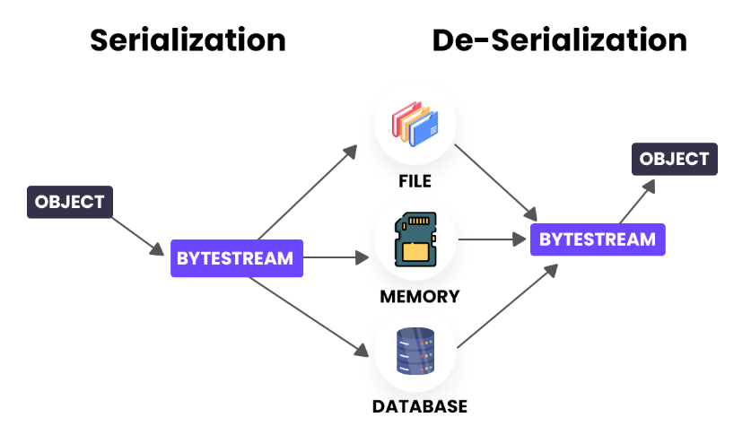
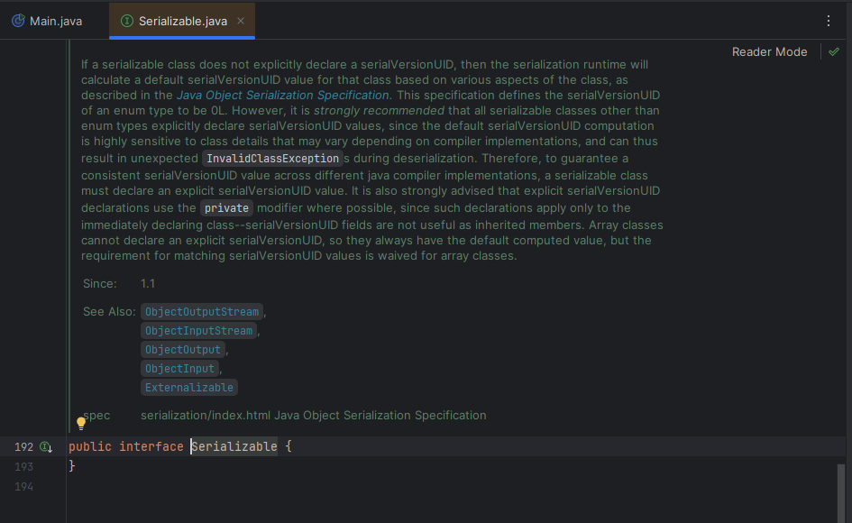
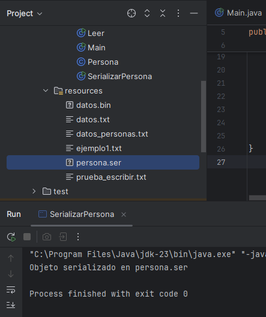
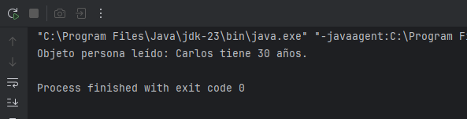
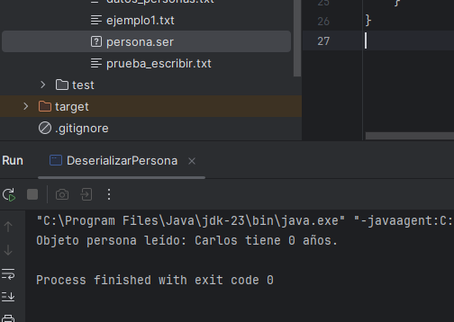

La serialización en Java es una técnica para guardar (y luego recuperar) el estado de un objeto en un fichero o en otro medio de almacenamiento, como si lo “congeláramos” y después lo “reviviéramos”.
La deserialización hace lo contrario: reconstruye el objeto original a partir de los bytes guardados.

Para poder usarlas, nuestras clases deben implementar la interfaz Serializable, aunque esta solamente sirve para marcar y no obliga a implementar ningún método (porque no tiene ninguno).

Clases ObjectOutputStream (serializar) y ObjectInputStream (deserializar)
Estas clases, igual que pasaba sobre la lectura y escritura de ficheros binarios, se usan a su vez sobre clases FileOutputStream ò FileInputStream.
Vamos a usar la siguiente clase Persona de referencia para instanciar objetos y realizar los ejemplos:
public class Persona implements Serializable {
private String nombre;
private int edad;
public Persona(String nombre, int edad) {
this.nombre = nombre;
this.edad = edad;
}
public String toString() {
return nombre + " tiene " + edad + " años.";
}
}
- Serializamos (guardando el objeto en un archivo):
public class SerializarPersona {
public static void main(String[] args) {
Persona p = new Persona("Carlos", 30);
try {
ObjectOutputStream out = new ObjectOutputStream(new FileOutputStream("src/main/resources/persona.ser"));
out.writeObject(p);
out.close();
} catch (IOException e) {
System.out.println("Algo ha ido mal.");
e.printStackTrace();
}
System.out.println("Objeto serializado en persona.ser");
}
}
El archivo resultante (persona.ser) no es legible a simple vista: está en formato binario.
- Deserializamos (leemos el objeto desde el archivo creado anteriormente):
public class DeserializarPersona {
public static void main(String[] args){
try {
ObjectInputStream in = new ObjectInputStream(new FileInputStream("src/main/resources/persona.ser"));
Persona p = (Persona) in.readObject();
in.close();
System.out.println("Objeto persona leído: " + p);
} catch (IOException | ClassNotFoundException e) {
System.out.println("Algo ha ido mal.");
e.printStackTrace();
}
}
}

Atributos serializables y no-serializables
Hasta ahora, hemos supuesto que todos los atributos de nuestro objeto Persona eran serializables, pero puede ser que no necesitemos almacenar el estado completo del objeto, si no solamente los atributos necesarios. Si alguno no lo es, debemos marcarlo como transient para que se ignore. Lo probamos con la edad:
public class Persona implements Serializable {
private String nombre;
private transient int edad;
public Persona(String nombre, int edad) {
this.nombre = nombre;
this.edad = edad;
}
public String toString() {
return nombre + " tiene " + edad + " años.";
}
}Al deserializar, su valor será null (para objetos) o 0, false, etc., según el tipo primitivo que utilice. Vamos a probarlo...
Volvemos a lanzar los métodos para serializar y deserializar personas:

Como no hemos serializado la edad, cuando se deserializa, esta se crea con valor 0 (nulo para enteros).
La serialización en Java es un proceso inherentemente inseguro, ya que puede ser utilizada para fines malintencionados, como la inyección de objetos. Por lo tanto, siempre debemos asegurarnos de deserializar sólo los datos de fuentes en las que confiemos y, si es posible, usar alternativas más seguras como JSON (lo veremos más adelante).